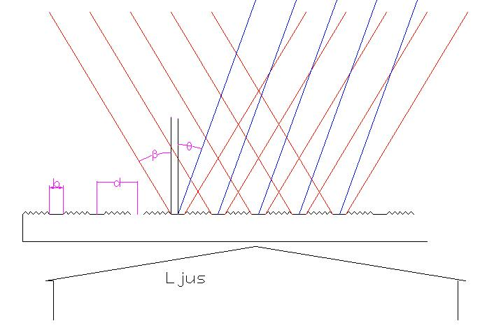
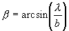
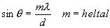
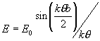
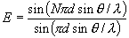
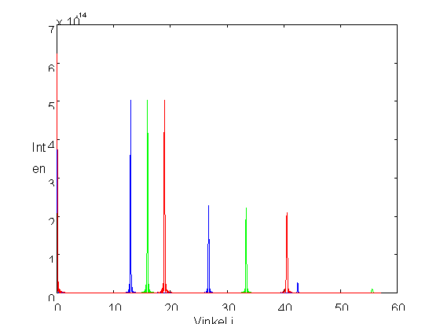
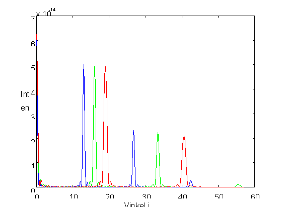

Gitter
En mycket vanlig optisk komponent (både avsiktligt och oavsiktligt) är gitter (eng. Gratings). Den är en kombinationstillämpning av interferens och diffraktion, som ofta används när man vill analysera våglängdssammansättningen på ljus.En liten figur:

Ljus kommer in mot en glasplatta i vilket parallella repor gjorts
(Alternativt kan genomsläppligheten för ljus förstörts på annnat sätt, det viktiga är att ljuset inte kommer igenom)
Den oskadade delen av glasen bildar avlånga strimmor (=
enkelspalter )) som sprider ljus en en vinkel (röd) som grovt ges av'
där b = bredden av det oskadade området = spaltbredd.
Från var och en av strimmorna sprids nu ljus i likadana vinklar. Dessa ljusfält kommer snart att överlappa och interfererar då sinsemellan. Om mittpunktsavtåndet mellan två spalter är d kommer vägskillnaden mellan
strålar från intilliggande öppningar (blå) att bero av vinkeln somFör att två intilliggande strålar (och därmed alla andra också) ska interferera konstruktivt ska denna vägskillnad vara ett helt antal våglängder dvs

För alla andra vinklar blir det meller mindre mörkt, beroende på att antalet spalter är så stort att så fort vägskillanden avviker det minsta från ett heltal finns det en spalt en bit åt sidan som ligger i motfas mot den första.
Matematiskt beskrivs det första förloppet av uttrycket för diffraktion i enkelspalt

och uttrycket för för fältfördelningen som funktion av vinkel för interferensen. (Härledning)

I nedanstående figur visas intensitetsfördelningen för tre våglängder
450nm , 550nm och 650nm, d=2000nm, b=500nm och 100 spalter.
Om vi gör samma sak för 20 spalter blir det i stället så här

Man ser att maxima har blivit bredare dvs färguppdelningen har blivit sämre.
Till
nästa kapitel (Modern optronik)Till
innehållsförteckningen